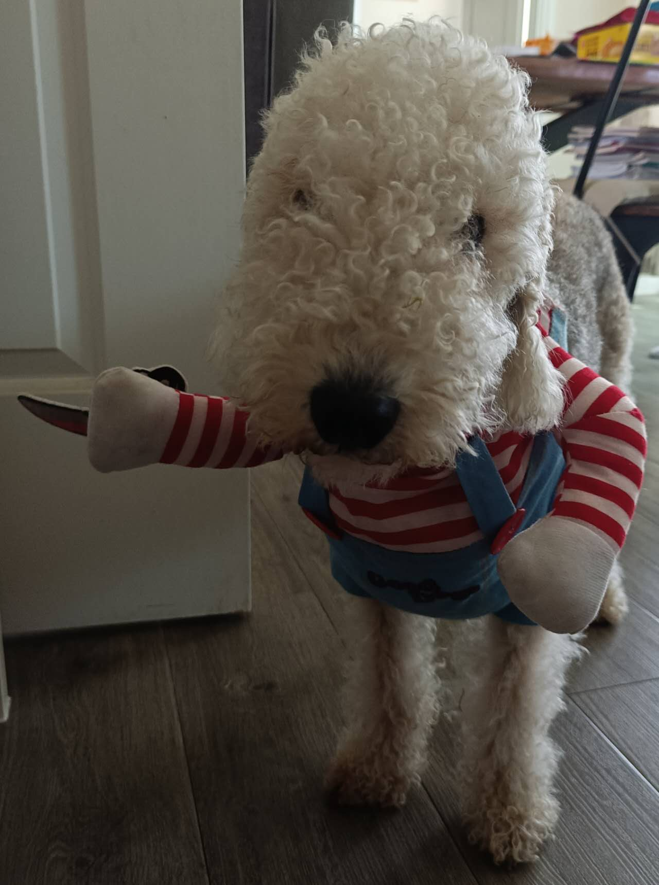

Terrier Group · Northumberland, England
Bedlington
Terrier
A lamb's coat over a lion's heart.
It looks like something that wandered out of a flock — curly, pale, and softly arched. Then it moves, and the disguise falls apart. Underneath that woolly coat is a fast, wiry, unbelievably game little dog bred by coal miners to kill vermin and keep up with a poacher on the run.

- Height
- 15–17.5 in
38–44 cm - Weight
- 17–23 lb
8–10 kg - Lifespan
- 11–16 years
- AKC recognised
- 1886
Origins
The breed takes its name from Bedlington, a mining town in Northumberland in the north-east of England. Before that it was called the Rothbury Terrier, after the nearby village where the type was concentrated in the early 1800s.
Its job description was blunt: kill rats in the pits, work badger and fox above ground, and run down a rabbit for the pot. It kept the company of miners and poachers rather than gentlemen, which is exactly why it was built for speed as much as grit — a dog that had to catch dinner and then leave the field quickly.
The look
Nothing about the silhouette is accidental. The head is a narrow pear — wedge-shaped, rounded at the skull, with no stop at all, so the profile runs in one unbroken line from crown to nose. The ears hang flat and finish in a small tassel of fine hair.
The back arches over the loin and the tuck-up is deep, giving the same lines you see in a sighthound. That is a galloping frame wearing a terrier's coat. The coat itself is the give-away: a crisp mixture of hard and soft hair that stands off the body and curls, especially on the head and face. It sheds very little.
Colours are blue, liver, and sandy, each also seen with tan markings. Puppies are born dark and lighten as they mature — a blue puppy arrives nearly black.
Temperament
Indoors, a Bedlington is a mild, affectionate, slightly theatrical companion that would rather be touching you than not. They are quieter in the house than most terriers and attach themselves hard to their people.
Outdoors is a different animal. The prey drive is genuine and the acceleration is real, so a reliable recall and a secure fence matter more here than with a comparably sized companion breed. They are game rather than quarrelsome — slow to start something, but historically not built to back down from it either.
Living with one
The coat does not shed itself, which means you deal with it instead: clipping and tidying roughly every six to eight weeks, plus regular brushing between visits. In exchange you get a dog that leaves very little hair on the sofa.
Exercise needs are about intensity, not duration. A Bedlington that gets to sprint is satisfied; one taken on nothing but slow leash walks generally is not.
The breed carries an inherited copper storage disorder — copper toxicosis — in which copper accumulates in the liver instead of being cleared. It is linked to the COMMD1 gene and a DNA test exists, so responsible breeders screen for it. If you are looking at a puppy, ask about the parents' copper testing.